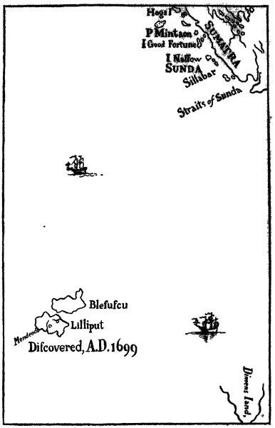
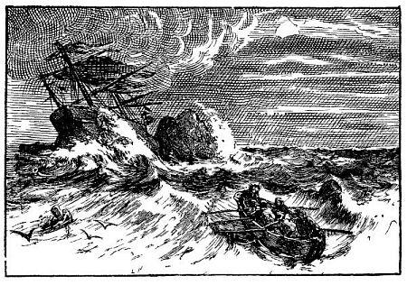
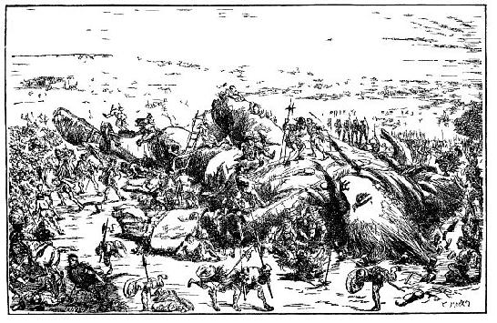

Tác giả kể vài ba câu chuyện về bản thân và gia đình - Ông đã ham thích du lịch như thế nào - Đắm tàu - Tác giả thoát chết - Ông bơi được vào bờ biển nước Lilliput - Ông bị cầm tù và giải vào nội địa.

Cha tôi có một trang trại nhỏ tại vùng Nottingham. Cha tôi có năm con trai, tôi là thứ ba. Năm mười bốn tuổi, tôi đến Cambridge theo học trường Emanuel. Ba năm trời, tôi học chăm chỉ. Chẳng may, số tiền nuôi tôi ăn học tuy chẳng đáng là bao, nhưng số tiền ấy cũng đã trở thành một gánh nặng cho gia đình vốn nghèo túng. Thế là tôi bị gửi đi tập việc tại nhà giải phẫu danh tiếng của ông James Bates, một nhà giải phẫu nổi tiếng ở Luân Đôn. Tôi tập việc ở đấy bốn năm. Thỉnh thoảng, cha tôi gửi cho tôi ít tiền. Tôi dùng số tiền này để học nghề hàng hải và những môn toán cần thiết cho người đi biển, bởi vì tôi luôn luôn nghĩ rằng, một ngày mai đây, đó phải là số mệnh của tôi. Sau khi từ biệt ông Bates, tôi trở về nhà. Cha tôi, chú tôi là John cùng vài ba người họ hàng thân thân nữa gom góp cho tôi món tiền bốn mươi sterling[1] và hứa hằng năm sẽ cung cấp cho tôi ba mươi sterling để tôi ăn học ở Leyden. Tôi học ngành thuốc trong thời gian hai năm, bảy tháng, tôi biết rằng nghề chữa bệnh này rất cần thiết cho những cuộc du lịch lâu dài.
Ở Leyden về nhà chẳng được bao lâu, tôi được ông Bates giới thiệu cho làm một chân thầy thuốc trên tàu Con Nhạn, dưới quyền chỉ huy của thuyền trưởng Abraham Pannel. Tôi làm việc với ông ta ba năm ruỡi, đi một vài chuyến sang vùng biển phương Đông và vài ba nơi khác trên thế giới. Về đến nhà, tôi quyết định ở lại Luân Đôn. Ông Bates khuyến khích tôi ở lại, giới thiệu cho tôi nhiều bệnh nhân của ông. Tôi thuê một ngôi nhà nhỏ ở xóm Jewry. Nghe lời mọi người khuyên nên lấy vợ, tôi cưới cô Mary Burton, con gái thứ hai ông Edmund Burton, một người làm nghề khâu mũ vải ở phố Newgate. Tôi được hưởng của hồi môn trị giá bốn trăm sterling.
Nhưng hai năm sau, ông Bates - thầy học của tôi - qua đời. Tôi vốn ít giao thiệp nên công việc bắt đầu sút dần, vì lương tâm không cho phép tôi bắt chước dùng những mánh khóe như một số bạn đồng nghiệp. Sau khi bàn bạc với vợ tôi và mấy người bạn, tôi quyết định lại đi biển. Tôi nhận chân thầy thuốc trên hai con tàu. Và trong sáu năm trời, tôi đã đi nhiều chuyến sang Nam Dương và sang Mỹ. Nhờ vậy mà số tiền tôi để dành đã được kha khá. Những lúc rỗi, tôi có đọc các tác giả cổ kim hay nhất, vốn lúc nào tôi cũng mang theo sách bên mình. Khi lên đất liền, tôi quan sát phong tục tập quán của người địa phương và học tiếng nói của họ, vì trí nhớ của tôi rất tốt nên tôi học khá dễ dàng.
Chuyến đi cuối cùng của tôi không may mắn lắm, nên tôi chán nghề đi biển và quyết định ở nhà với vợ con. Tôi dời nhà khỏi khu Old Jewry, sang khu Fetter Lane, rồi sang khu Wapping, với niềm hy vọng kiếm được nhiều việc làm với anh em thủy thủ. Nhưng tôi đã tính toán sai. Sau ba năm cố gắng thu xếp công việc không có kết quả, tôi nhận lời thuyền trưởng William Prichard, chỉ huy tàu Antelope đi về biển phương Nam. Ngày 4 tháng 5 năm 1699, chúng tôi dời bến Bristol. Thoạt đầu, chuyến đi rất thuận buồm xuôi gió.
Tôi sẽ làm bạn đọc khó chịu nếu tôi kể tỉ mỉ với các bạn những cuộc phiêu lưu trên mặt biển phương Nam. Bạn đọc chỉ cần biết rằng, khi chúng tôi đang tiến về phía quần đảo Nam Dương, thì một cơn bão dữ dội cuốn thuyền chúng tôi về hướng tây bắc miền Van Diemen. Khi định được phương hướng, chúng tôi thấy mình đang ở vĩ tuyến nam 30 độ 2 phút. Mười hai người trong đoàn thủy thủ đã chết vì kiệt sức và thiếu ăn, những người còn sống trông rất thảm hại. Ngày 5 tháng mười một nghĩa là vào đầu mùa hè ở cái phần quả địa cầu này, qua màn sương mù dày đặc một thủy thủ bỗng thấy một mỏm đá cách tàu có một sải tay. Nhưng gió thổi mạnh quá, tàu đâm sầm vào tảng đá. Sáu anh em chúng tôi thả được chiếc sà-lúp xuống biển, cố sức bơi xa con tàu và mỏm đá. Chèo mãi, chèo mãi, chúng tôi đi được ba dặm[2]. Nhưng kiệt sức vì những công việc chống chọi trên con tàu lúc trước nên chúng tôi không còn hơi để chèo nữa và chúng tôi mặc cho sóng cuốn di. Khoảng nửa giờ sau, một cơn gió giật lật úp sà-lúp.

Số phận năm người bạn và những thủy thủ mắc ở mỏm đá, tôi không biết ra sao. Nhưng chắc họ chết cả rồi. Một mình tôi cứ thế bơi theo hướng gió thổi và thủy triều. Nhiều khi tôi đưa chân quờ quạng xem đã tới đất chưa, nhưng chẳng thấy gì. Đúng lúc tôi đã kiệt sức, định bỏ cuộc chiến đấu, thì chân tôi chạm tới đất, lúc này bão đã ngớt. Dốc thoai thoải kéo dài nên tôi phải lần đi gần một dặm mới tới bờ. Lúc ấy chắc đã tám giờ tối. Tôi tiếp tục đi gần nửa dặm nữa mà chẳng thấy dấu vết nhà cửa hay bóng người. Hoặc, vì mệt quá nên tôi chẳng trông thấy gì. Đã kiệt sức lại thêm nóng bức, và tôi đã uống nửa chai rượu mạnh lúc dời bỏ con tàu, nên lúc này tôi buồn ngủ quá. Tôi nằm lăn xuống bãi cỏ rất mịn, ngủ một giấc say như chết khoảng chín tiếng đồng hồ, vì lúc thức dậy, trời đã hửng sáng. Tôi cố ngồi dậy nhưng không sao động đậy được. Đúng thế, lúc ấy tôi nằm ngửa, tôi thấy hai tay hai chân tôi bị trói chặt xuống đất, cả cái mớ tóc dài và rậm của tôi cũng bị buộc chặt xuống đất. Cả mình tôi, suốt từ nách đến đùi, đầy những dây rợ mỏng manh chằng chịt. Tôi chỉ có thể nằm ngửa nhìn trời mà thôi. Mặt trời đã lên cao làm tôi chói cả mắt. Tôi nghe thấy tiếng rì rầm, nhưng tôi nằm kiểu ấy nên chẳng thấy gì ngoài bầu trời. Một lát sau, tôi thấy một cái gì động đậy, bò bò trên chân trái tôi, nhẹ nhàng tiến lên đến ngực, rồi đến cằm. Tôi cố hết sức cúp mắt nhìn xuống thì thấy đó là một người bé tí xíu cao độ 6 inch, tay cung, tay tên, lưng đeo một cái ống đựng tên. Cùng lúc ấy, tôi đoán phỏng chừng bốn mươi người khác, cũng cỡ ấy đang đi theo anh ta.

Kinh ngạc hết sức, tôi gầm lên làm cả toán khiếp hãi bỏ chạy tán loạn. Sau này, người ta kể cho tôi biết số người tí hon ấy xô nhau nhảy từ sườn tôi xuống đất đã bị thương. Nhưng rồi họ quay trở lại và một người liều mình đến tận mặt tôi xem cho rõ, rồi mắt nhìn lên trời, hai tay giơ cao lên, ra vẻ thán phục lắm và kêu lên một tiếng tuy the thé nhưng rõ ràng: Hekinah degul. Những người khác nhắc lại nhiều lần những tiếng ấy, nhưng tôi chẳng hiểu gì hết. Trong khi ấy, tôi cứ nằm trong cái thế rất bất tiện, như bạn đọc có thể hình dung được. Sau cùng, tôi lấy hết sức bình sinh để tự giải phóng, may thay những dây trói và cọc buộc tay trái tôi đứt bung. Tôi giơ tay lên mặt và biết cách họ đã trói tôi như thế nào. Cùng lúc ấy, tôi lắc đầu mạnh một cái và thấy đau điếng. Những dây buộc tóc tôi về phía trái chùng lại một chút, thế là tôi có thể ngóc đầu được vài phân. Nhưng, những chú bé tí hon ấy lại ù té chạy, tôi chẳng bắt được chú nào. Rồi những tiếng hò vang dậy. Sau đó một người hô to: tolgo phonac. Bỗng tôi thấy hàng trăm mũi tên cắm phập vào bàn tay trái, như hàng trăm mũi kim. Họ còn bắn một loạt súng lên không, như thể ta bắn đại bác vậy. Nhiều mũi tên bắn trúng người tôi (mặc dù tôi chẳng cảm thấy gì), bắn trúng mặt tôi, tôi vội vàng đưa bàn tay trái lên che mặt. Khi cơn mưa tên chấm dứt, tôi rên lên vì buồn bực và đau đớn. Tôi cố giằng cho đứt dây trói một lần nữa, tức thì lại một trận mưa tên vèo vèo, mau hơn đợt trước. Một số kẻ còn lấy giáo đâm vào sườn tôi. Cũng may tôi mặc cái áo da trâu, nên không sao cả. Tôi nghĩ không nên động đậy nữa là khôn hơn cả và định cứ nằm ì ra đó đến tận đêm tối, khi đó tôi sẽ dùng tay trái để cởi tất cả dây trói. Còn đối với dân cư xứ này, tôi tính một mình tôi có thể đương đầu với một đoàn quân lớn, miễn là người nào cũng bé nhỏ như những người tôi vừa trông thấy. Tôi có ý định như vậy, nhưng số phận lại quyết định cách khác. Thấy tôi nằm im, họ thôi không bắn nữa. Nghe tiếng ầm ầm, tôi biết là họ kéo đến ngày một đông hơn. Cách tôi chừng hai fathom [1] về bên tay phải, tôi nghe thấy tiếng những người thợ đang đóng cái gì. Tôi cố hết sức ngoái đầu lại và nhìn thấy một cái bục cao có bốn người đứng và có hai hay ba cái thang.
[1] 1 fathom bằng 1,82m.